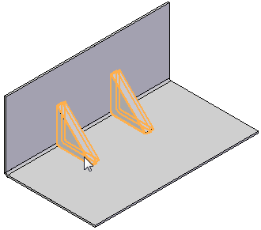
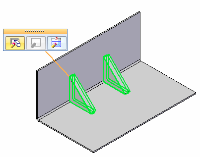
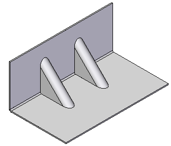
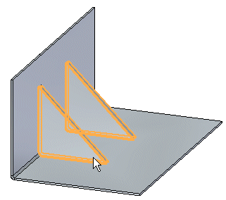
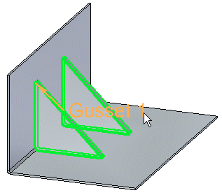
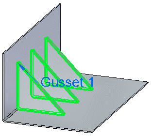
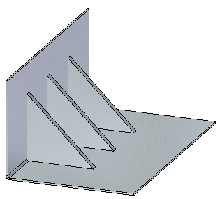

Edit a gusset
Edit a gusset in the ordered environment
-
Click the gusset to edit.

-
Select the Edit Definition button

-
On the command bar, click Options and use the Gusset Options dialog box to edit the gusset parameters.
-
On the Gusset Options dialog box, OK.
-
Click to save the change.

Note:
You can also select a gusset, then select the Dynamic Edit button to reposition the gusset along the bend.
Edit a gusset in the synchronous environment
-
Click the gusset to edit.

-
Click the gusset edit handle.

-
Use the command bar options to edit the gusset.

-
Click to complete the edits.

How do I
Construct a gussetLearn more
Constructing gussetsLook up more details
Gusset commandGusset command bar
Gusset command bar
Gusset Options dialog box